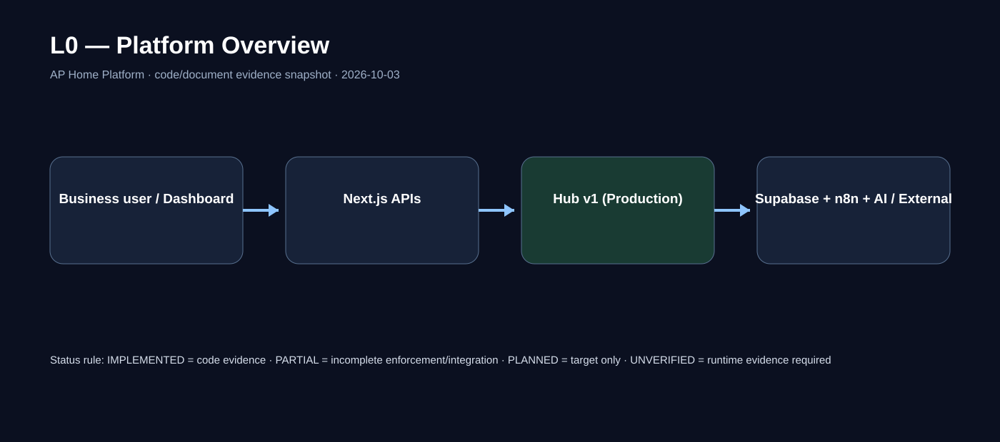
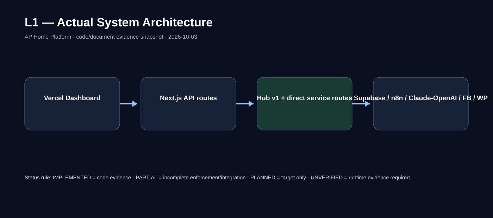
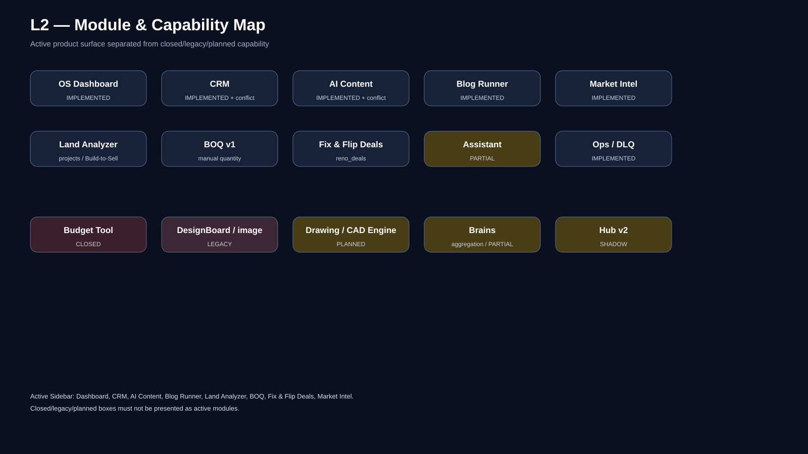
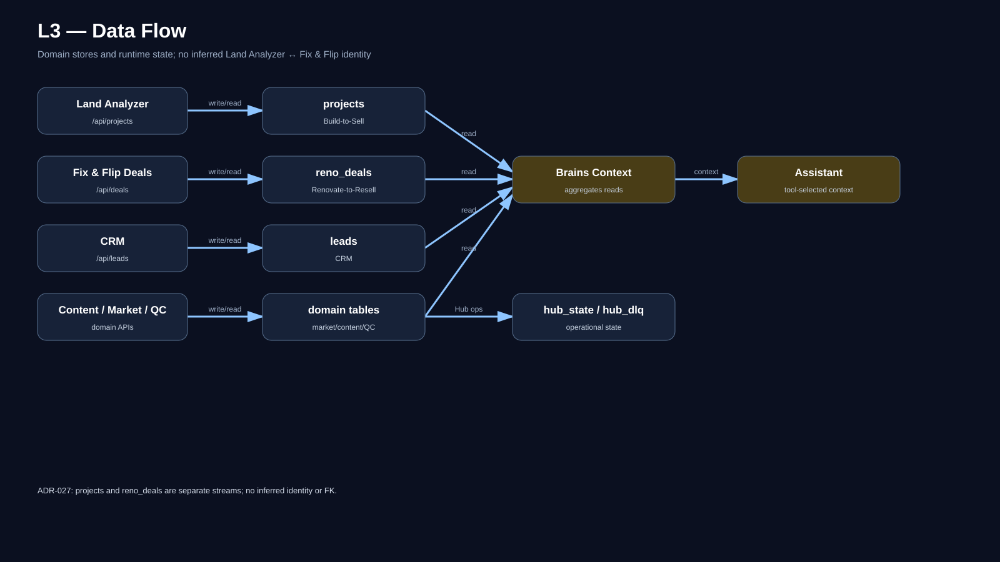
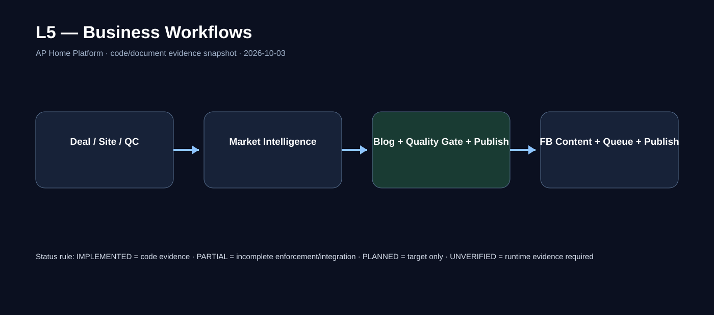
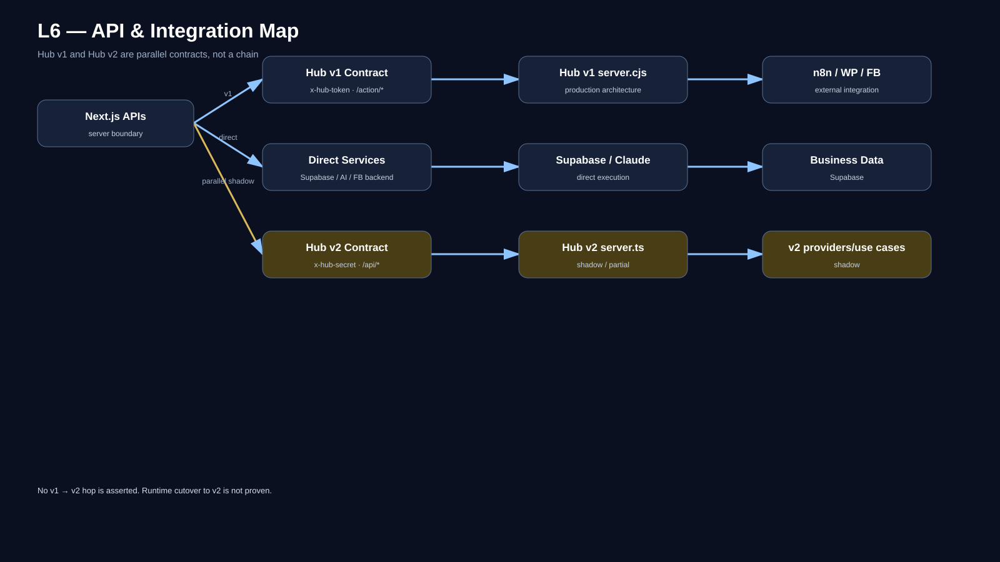
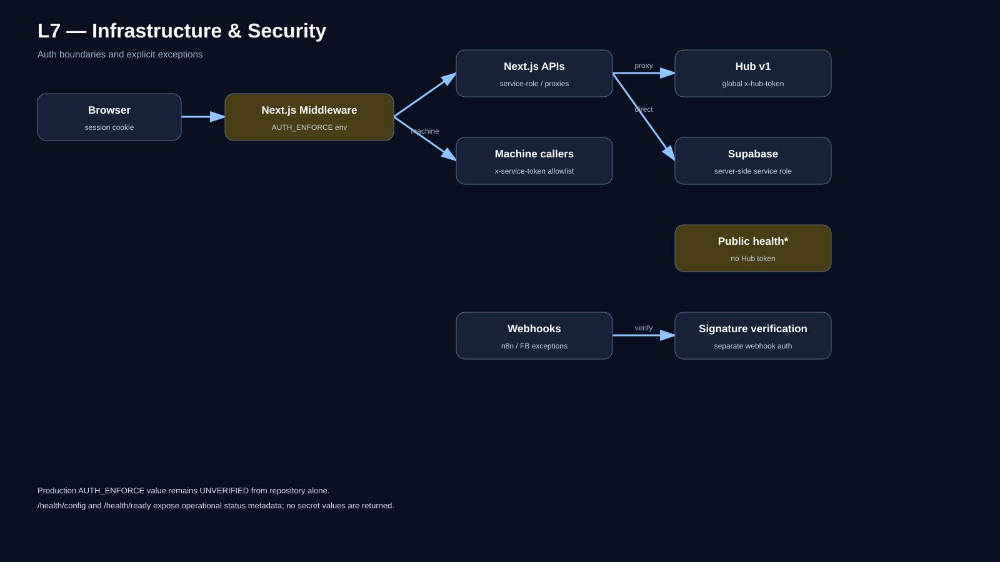
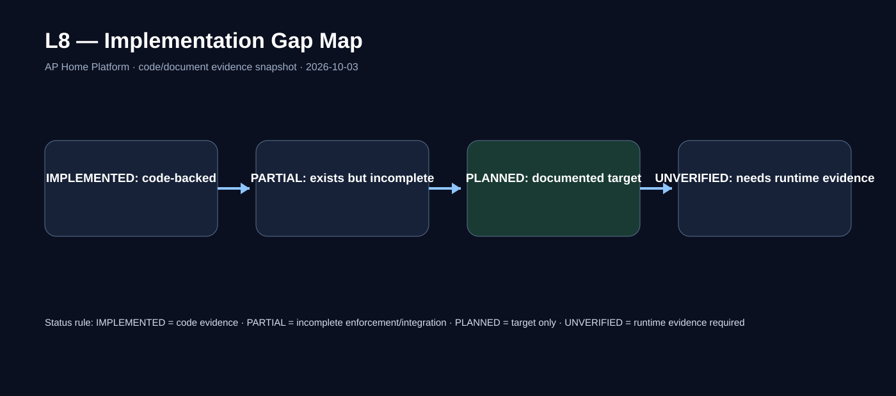

AP Home Platform — Master Architecture
Executive finding
IMPLEMENTED
Hub v1 services/backend-hub/server.cjs remains the documented production orchestration path for Blog/FB queue actions.
PARTIAL / SHADOW
TypeScript clean-architecture backend exists, but repository docs explicitly distinguish it from the live v1 path.
CONTEXT AGGREGATION
/api/brains/context aggregates existing business context. It must not be represented as a new autonomous database/learning brain.
PARTIAL
Internal-only behavior is present in application logic/prompt design, but repository documentation notes that server-side evidence enforcement is not complete.
L0 — Platform Overview

Interpretation: This is the executive map. It deliberately avoids implying every request traverses Hub/Brains.
L1 — Actual System Architecture

Interpretation: Actual routing is mixed: some flows use Hub v1 while Assistant and other APIs can call data/AI services directly.
L2 — Module & Capability Map

Interpretation: See diagram for the evidence-backed boundary. Detailed route-level expansion should cite exact files/functions.
L3 — Data Flow

Interpretation: See diagram for the evidence-backed boundary. Detailed route-level expansion should cite exact files/functions.
L4 — Brain & Assistant

Interpretation: Brains supplies shared context; Assistant selects tools and calls the LLM. “Internal only” is a constraint, not proof that every generated sentence is mechanically evidence-bound.
L5 — Business Workflows

Interpretation: See diagram for the evidence-backed boundary. Detailed route-level expansion should cite exact files/functions.
L6 — API & Integration

Interpretation: v1 and v2 contracts must remain visually separate; do not collapse x-hub-token /action/* and v2 API conventions into one route.
L7 — Infrastructure & Security

Interpretation: See diagram for the evidence-backed boundary. Detailed route-level expansion should cite exact files/functions.
L8 — Implementation Gap Map

Interpretation: See diagram for the evidence-backed boundary. Detailed route-level expansion should cite exact files/functions.
Evidence register
services/backend-hub/server.cjs — Hub v1 state, Supabase, queue/orchestration, callbacks, auth-related implementation
services/backend-hub/src/server.ts — Hub v2 entry/dependency graph
app/api/assistant/route.ts — Assistant endpoint/tool-calling
app/api/brains/context/route.ts — cross-module context aggregation
docs/context_brief.md + docs/glossary.md + CLAUDE.md — v1/v2 operational distinction
docs/v2/04-decisions/accepted/* — accepted architecture/business decisions
SECURITY_AUDIT.md + tests/auth-smoke.ps1 — security/auth evidence
Known limitations of this snapshot
Code and repository documents establish implementation intent and static structure, but they do not by themselves prove current Production environment variables, active n8n workflow revisions, provider availability, deployment health, or end-to-end behavior. Those items remain UNVERIFIED until runtime evidence is checked.